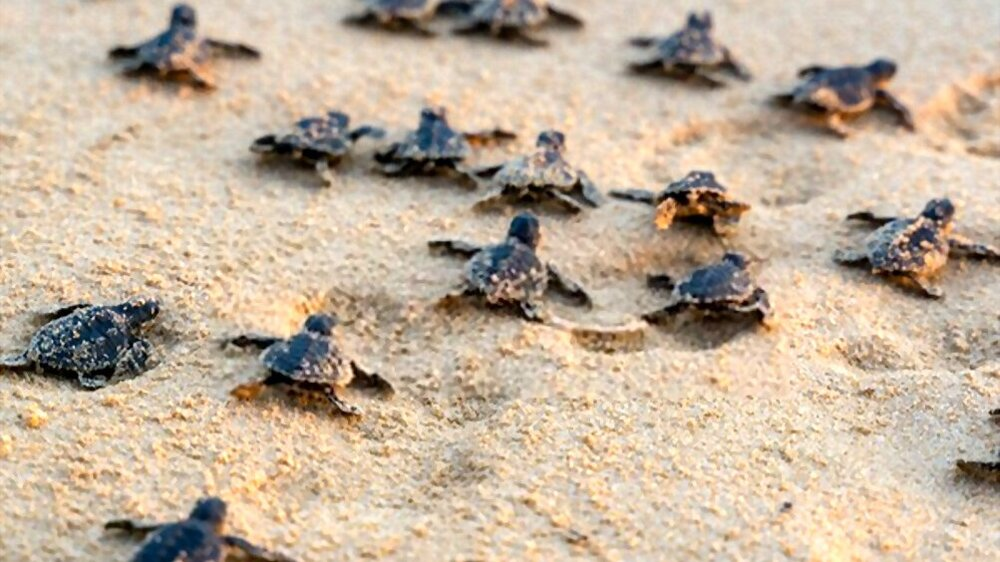

The primary aim of the Hikkaduwa Turtle Hatchery is to ensure the survival of endangered turtle species through various conservation efforts. Here are some key aspects of the hatchery:
- Nesting and Egg Collection - The hatchery monitors the nesting activities of sea turtles along the Hikkaduwa beach and neighboring areas.
- Incubation - Once the eggs are collected, they are placed in specially constructed sand-filled pits within the hatchery premises.
- Turtle Release - Visitors to the hatchery can witness the exciting event of baby turtles hatching. The hatchlings are then released into the sea during the evening hours to maximize their chances of survival.
- Rehabilitation of Injured Turtles - The Hikkaduwa Turtle Hatchery also serves as a rehabilitation center for injured or sick sea turtles.
- Educational and Awareness Programs - The hatchery conducts educational programs and awareness campaigns to promote turtle conservation among the local community and visitors.

Discover the array of activities available at the Hikkaduwa Turtle Hatchery in Sri Lanka.
Witness Turtle Hatchlings
One of the highlights of the hatchery is the chance to witness the hatching of baby turtles. Depending on the season, you may have the opportunity to see newly hatched turtles making their way towards the sea for the first time.
Release Hatchlings
Some hatcheries allow visitors to participate in the release of hatchlings into the ocean. It's a rewarding experience to hold these tiny creatures and watch them embark on their journey to the vast ocean.
Explore Turtle Rehabilitation Tanks
Many hatcheries have tanks where injured or sick turtles are rehabilitated. Explore these tanks and observe the turtles undergoing treatment and recovery, gaining a deeper understanding of the challenges they face and the efforts made to nurse them back to health.
Support Local Conservation Efforts
Consider making a donation to the hatcheries or purchasing turtle-themed souvenirs from their gift shops. By supporting these initiatives, you can contribute to the ongoing conservation efforts and help sustain the hatchery's activities.
In addition to its conservation efforts, the Hikkaduwa Turtle Hatchery actively participates in research and data collection. The hatchery collects valuable information on turtle nesting patterns, hatching success rates, and turtle behavior. This data contributes to scientific research and helps in the development of effective conservation strategies.
The Hikkaduwa Turtle Hatchery serves as a vital hub for turtle conservation in Sri Lanka. Through its dedicated efforts, it aims to ensure the survival and thriving of sea turtles, protecting them for future generations to admire and appreciate.